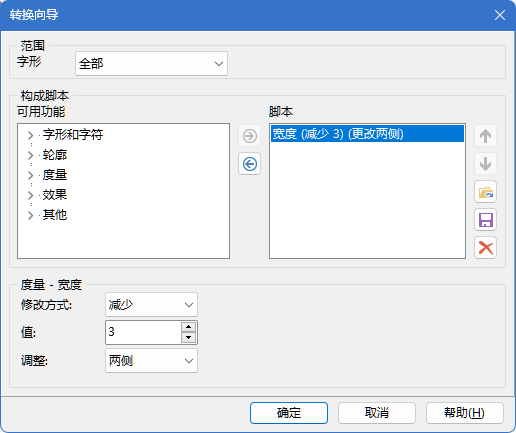
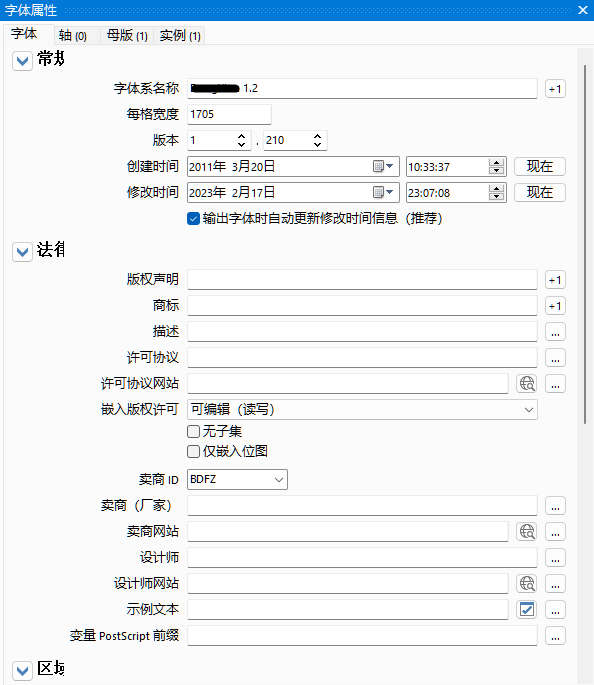

编程时，有一款等宽字体可以让代码看起来更舒适。
英文等宽字体有不少，但是能和中文对齐的不多。
windows自带的宋体和黑体都是严格的中英文宽度2:1的字体，但没有对“0”、“O”等易混淆字形做区分，不适合编程。
也有人尝试制作适合编程的中文等宽字体：
其中有些字体的英文是细长的或中文间隔大，看起来依旧不舒服。
有些英文字体本身就是0.5的宽度，只要和合适的中文字体混合使用，也可以达到等宽效果：
- Ubuntu Mono
- Inconsolata
- Fixedsys
- monofur
- 等等
还有大量宽度为0.6的英文字体，那么如果有宽度为1.2的中文字体，就能相互配合达到等宽效果。
我们可以利用 fontCreator（付费）、fontForge 之类的软件调整中文字体的宽度。
这里用“等线”字体举例，使用 fontCreator。这个字体中中文的宽度是2048，那么只需要将它的单格宽度改为2048/1.2就可以了。只可惜这个式子不能整除。
于是，我们先在“工具”→“字形转换器”中将宽度调整为2045。

再在“字体”→“属性”中设置每格宽度为1705。

导出后得到尺寸为1.2格的字体。
进一步，我们可以使用上述软件将两个字体融合。
例子待补充……